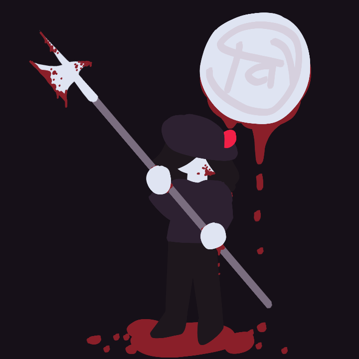
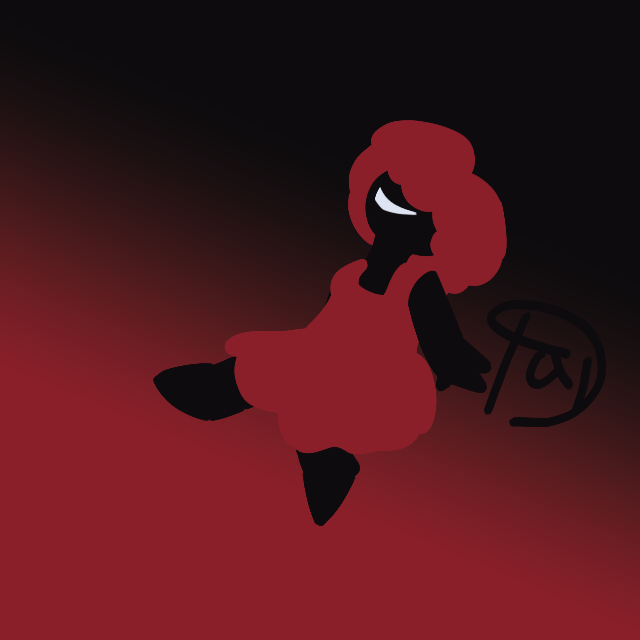
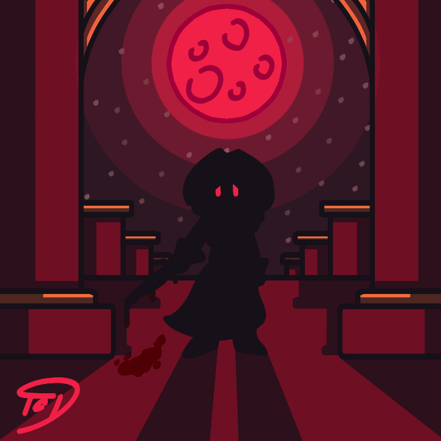
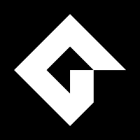
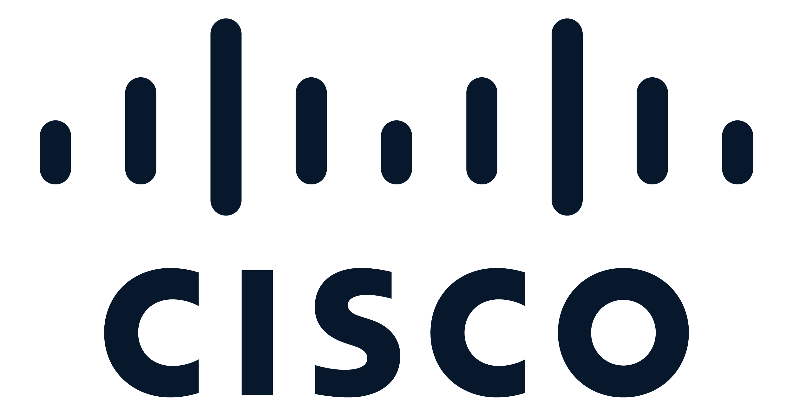
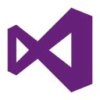
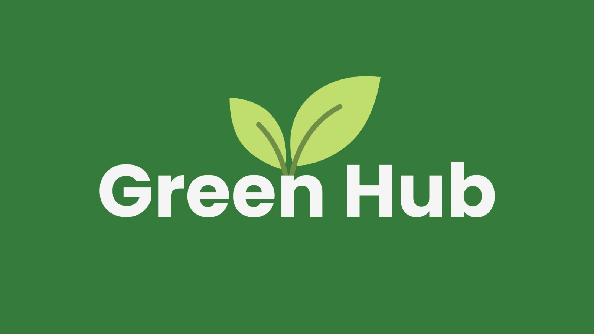
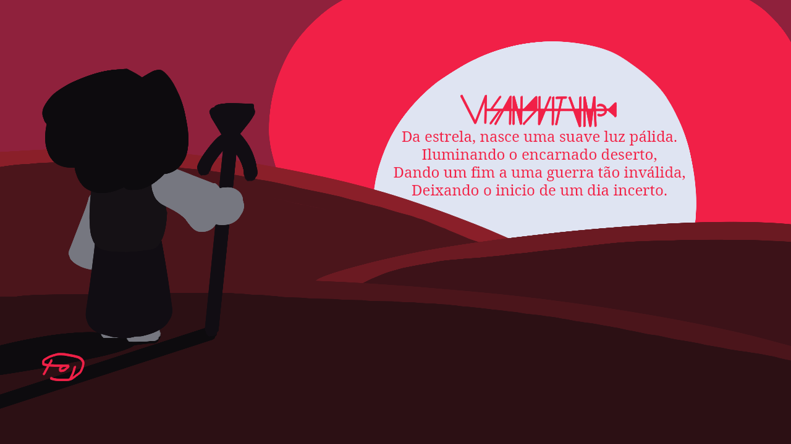
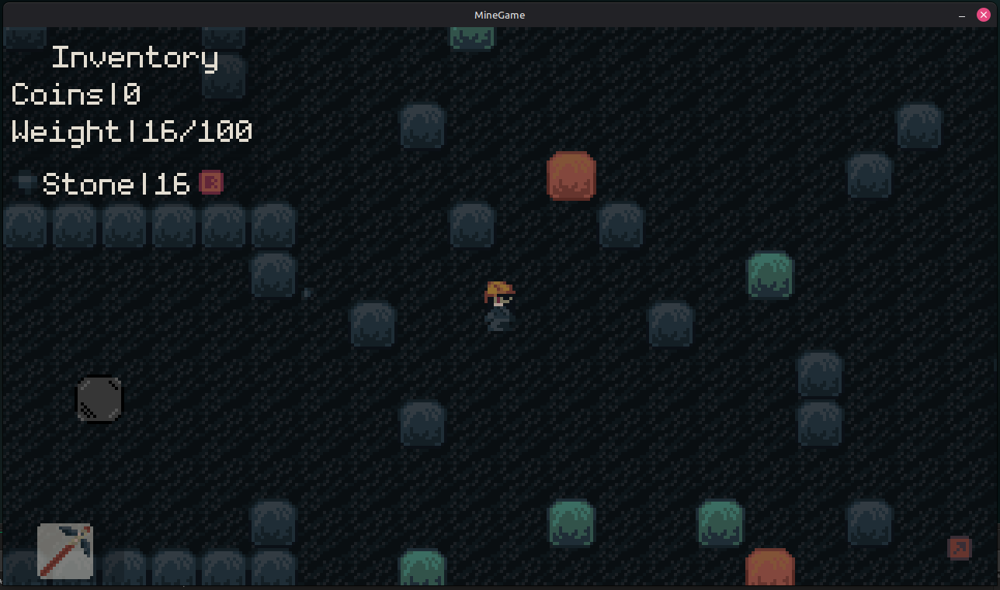
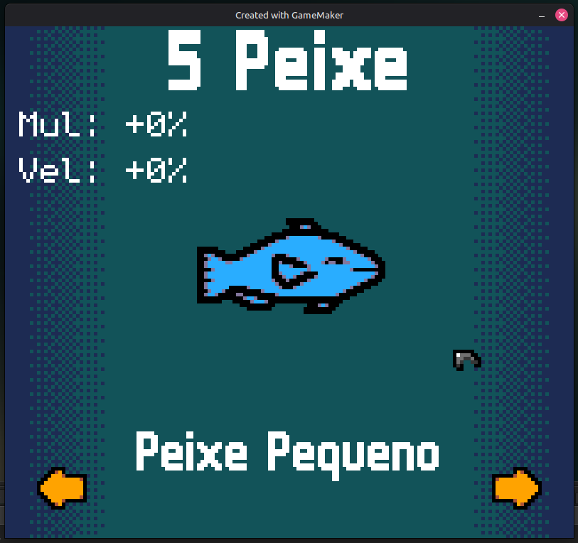

Sobre Mim

Olá, eu sou Thiago Gouveia Faria Teodoro, atualmente estou cursando Desenvolvimento de Sistemas na ETEC Ilza Nascimento Pintus.
Nasci no dia 30 de Junho de 2008 em São José dos Campos, fiz meu prézinho na escola EMEI Professora Idelena Menezes Trefilio de Carvalho e meu fundamental na EMEF Professora Vera Lúcia Carnevalli Barreto, ambas no bairro Santana.
Em 2020, participei do Decolar – Desenvolvimento do Potencial e Talento, um programa da cidade que oferece cursos para alunos de escolas municipais, lá foi onde eu tive meu primeiro contato com programação pelo Scratch e, posteriormente, Python.
Meus interesses
Desenhos
Desenhar é algo que nunca fui muito bom, mas sempre tive interesse em aprender, estudei um pouco arte no ano passado e até cheguei a fazer alguns desenhos, mas ainda há muito o que melhorar. Aprecie algumas artezinhas a seguir:



Desenvolvimento de Jogos

Sempre tive interesse em jogos, mas a parte que sempre mais me interessou foi como ele foi produzido e como suas mecânicas funcionam. Esse interesse me levou a estudar gamemaker no final de 2023. Você pode encontrar alguns dos meus projetos de jogos em Projetos Pessoais.
RPG (role-playing game) de Mesa
RPG é como criar um jogo sem programar, focando apenas em suas mecânicas e história, depois testando a sua criação com seus amigos. Eu comecei jogando Ordem Paranormal RPG e continuo jogando ele até hoje, mas sempre gosto de testar ou até criar outros sistemas.
Acadêmico
Aqui está alguns projetos que fiz no meu tempo na ETEC.
1°Ano
Hazendir
Um jogo roguelike feito no gamemaker como projeto do ano. Link para Download
AirNap
AirNap foi um projeto de banco de dados com o objetivo de criar um protótipo de um site similar ao Airbnb e um banco de dados relacionado ao site.
IT Essentials: PC Hardware and Software

Um curso da cisco realizado na matéria de Fundamentos da Informatica com foco na área de TI como um todo.
2°Ano
Sistema de Gerenciamento de Loja

Uma applicação de gerenciamento de lojas feita em CSharp usando CSharp que possui conexão com um banco de dados.
Greenhub

Um site feito que solicita diversas informações de uma empresa para calcular sua pegada ecológica, escrever seu relatório ESG, organizar seu inventário de emissões, enviar sugestões para tornar a empresa mais sustentável e econômica, realizar simulações e comparações com outras empresas do mesmo setor. Foi o projeto em que trabalhei durante o Hackathon
3°Ano
Estou ainda cursando o terceiro, mas eu e meu grupo já estamos começando a trabalhar em nosso TCC.
Minerva
Minerva é um site de gerenciamento de estudos, com o objetivo de oferecer um ambiente simples para os estudantes organizarem suas tarefas.
Projetos Pessoais
Visanguitum RPG

Visanguitum é um sistema de RPG que venho trabalhando a uns meses, ele ainda está longe de ser concluído, mas está com um fundação boa. Link para o DOCS do Draft 2 de Visanguitum
Mine Game

O Mine Game é, como seu nome em inglês diz, um jogo de mineração, ele foi feito no gamemaker e foi um dos projetos que mais passei tempo refinando sua funcionalidade base. Porém, infelizmente, não tive muito tempo para continuar trabalhando nele.
The More You Fish

The More You Fish é um jogo clicker sobre pescaria, ele foi feito com ajuda de um amigo chamado Samuel (ele está atualmente cursando o terceiro também, só que na turma B) que fez todos os sprites do jogo. O jogo em si é bem simples, foi feito apenas com a intenção de se divertir um pouco e trazer diversão pra quem quisesse jogar ele.